A non-technical introduction to the Bayesian approach
2026-08-12
Chat with your neighbor for 3 minutes:
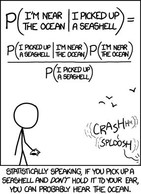
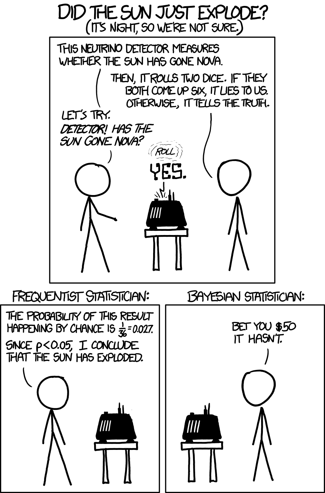
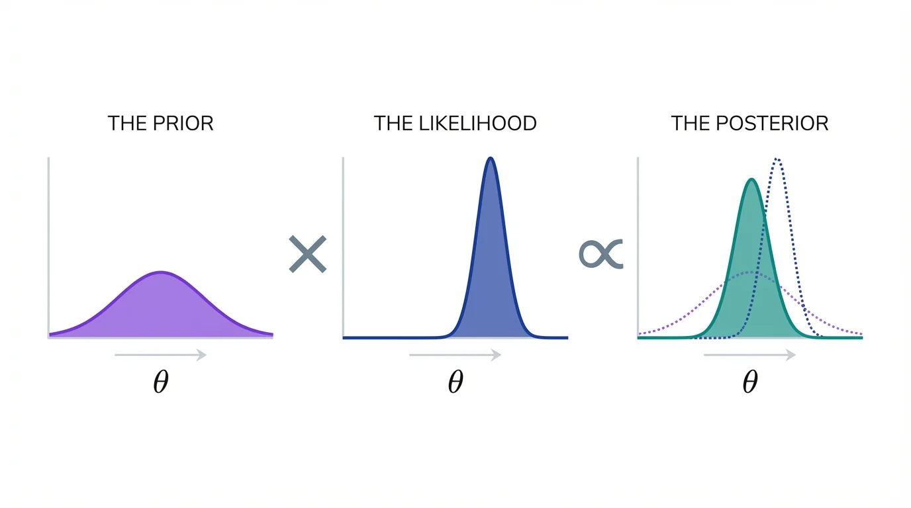
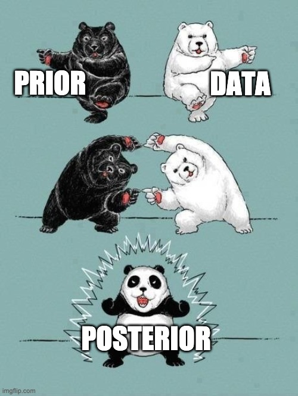
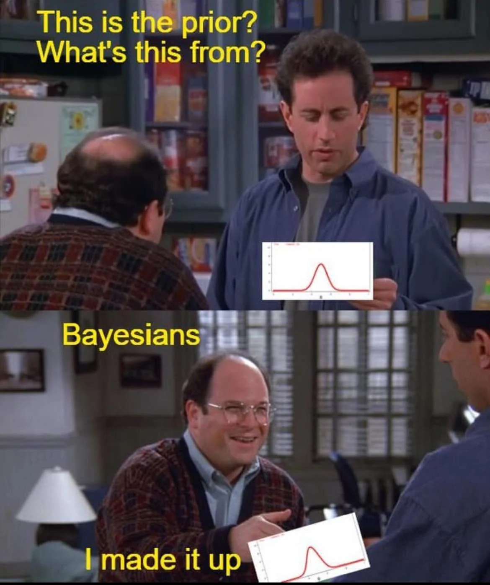
frequentists are often suspicious of priors because a prior can look like smuggling assumptions into the analysis before seeing the data.
Their instinct is:
Let the data speak for itself
or
The prior biases the model a priori!
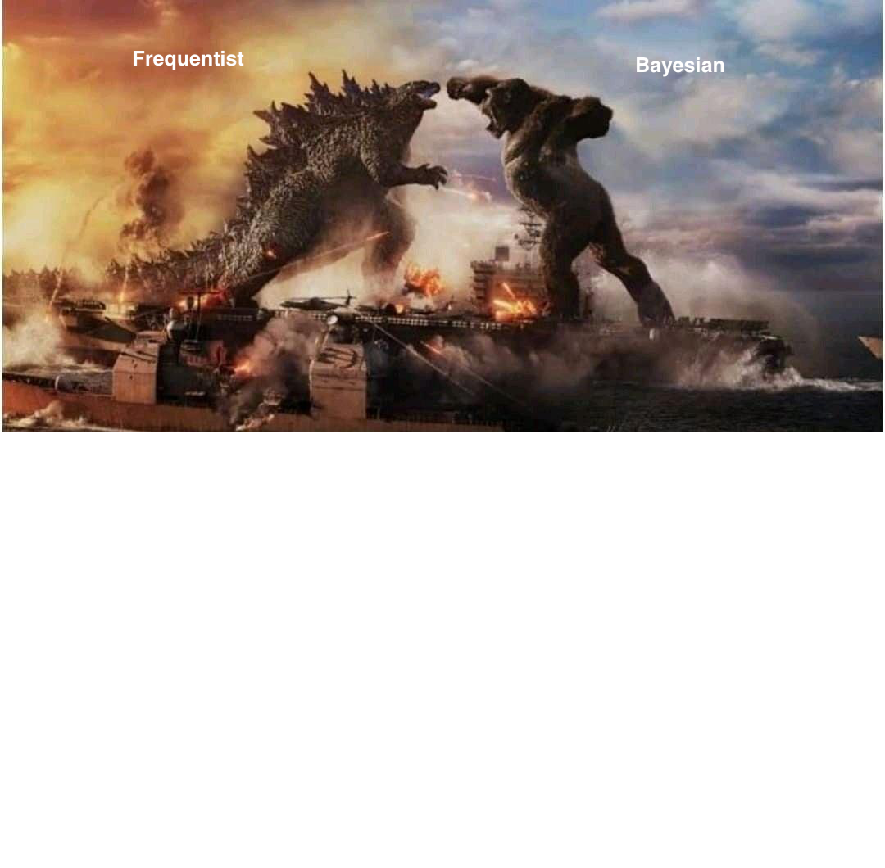
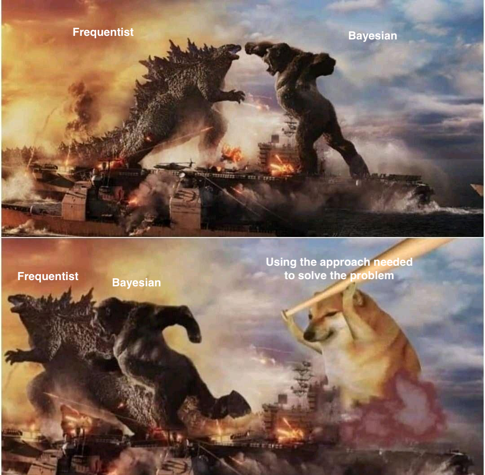
Why do we need a Bayesian approach to regression?
Can’t we just use ordinary least squares?
The answer is not (only):
Real regression problems are often weakly identified, noisy, unstable, and geometrically pathological.
Spoiler alert!
Bayesian regression stabilizes inference by:
Frequentist stats are often sufficient and comparable to Bayesian stats!
Frequentist:
Bayesian:
Frequentist:
# Fixed Effects
Parameter | Coefficient | 95% CI
----------------------------------------
(Intercept) | 2.09 | [1.91, 2.28]
x | 3.01 | [2.82, 3.20]Bayesian:
Suppose we have:
This is extremely common in:
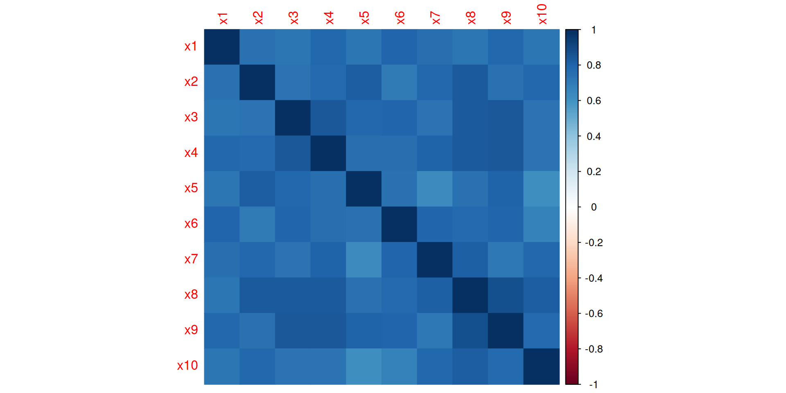
Figure 1: Correlation structure among predictors.
The truth is simple.
Only one predictor matters.
\[ y = 2x_1 + \epsilon \\ \epsilon = Normal(0,2) \]
All other predictors have zero effect.
Yet predictors are highly correlated.
what do you think will happen?
\[ y = 2x_1 + \epsilon \\ \epsilon = Normal(0,2) \]
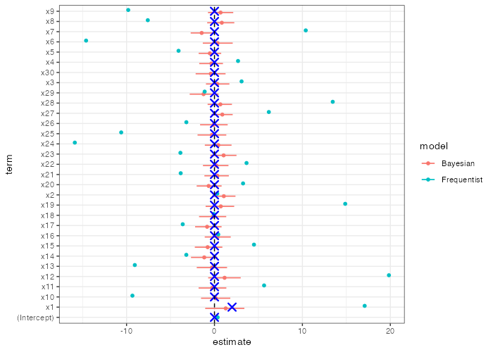
What do you notice? 👀
x30 doesn’t even have an estimate due to unindentifiability!
what do you think will happen?
\[ y = 2x_1 + \epsilon \\ \epsilon = Normal(0,2) \]
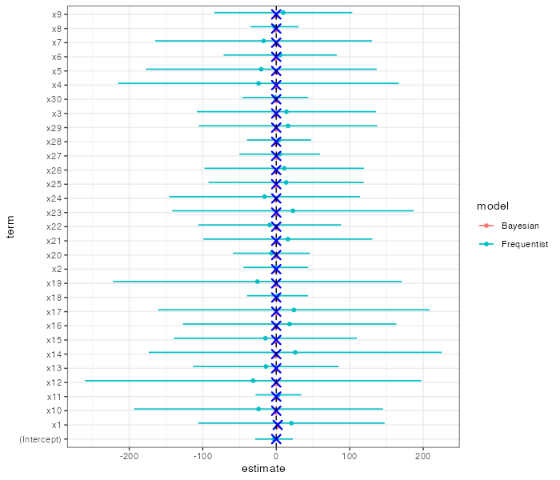
What do you notice? 👀
collinearity and inflates CIs and unstable coefficients!
Ordinary Least Squares (OLS):
The classical linear model:
\[ y = X\beta + \epsilon \]
with
\[ \epsilon \sim N(0, \sigma^2) \]
OLS estimator:
\[ \hat{\beta}_{OLS} = (X^TX)^{-1}X^Ty \]
The Hidden Assumption
OLS works well when:
But real data often violate all of these simultaneously.
With correlated predictors:
OLS asks:
Which coefficients minimize prediction error?
But it never asks:
Are these coefficient magnitudes plausible?
Collinearity creates unstable directions in parameter space.
The matrix:
\[ (X^TX)^{-1} \]
becomes nearly singular.
As a result:
Bayesian regression adds prior information:
\[ \beta_j \sim N(0,1.5) \\ \alpha \sim N(0,0.25) \\ \]
Posterior:
\[ p(\alpha, \beta \mid y) \propto p(y \mid \alpha, \beta)p(\alpha, \beta) \]
The prior regularizes weakly identified directions.
This changes the geometry of inference.
Same thing here!
Bayesian priors are not magic.
They encode structural skepticism.
The prior says:
Large coefficients should require strong evidence.
This is often scientifically reasonable.
Explaining the simulation Setup
We simulated the failure directly:
Predictors are interchangeable.
The model can fit equally well using:
OLS has no mechanism preventing absurd parameter values.
It only optimizes fit.
Researchers now face impossible interpretation.
Questions become unstable:
p-values fluctuate wildly across samples.
How did it do that?
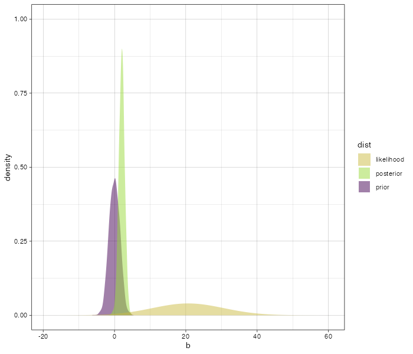
Scientific sceptisism saves us from statistical model stupidity
What the Prior Does
The prior shrinks implausible coefficients toward zero.
Not aggressively.
Just enough to stabilize weakly identified directions.
This is called:
Frequentist OLS emphasizes unbiasedness.
But unbiased estimators can have enormous variance.
Bayesian regression accepts:
This often improves:
OLS treats the model as fixed truth.
Bayesian workflow treats models as uncertain approximations.
This distinction is profound.
Frequentist confidence interval:
Does NOT mean: “There is a 95% probability the parameter lies here.”
Bayesian posterior interval:
Literally means: “Given model and data, there is 95% posterior probability the parameter lies here.”
The Bayesian posterior honestly expresses:
Sometimes the correct scientific answer is:
“We do not know very much.”
OLS often hides this instability behind noisy point estimates.
Bayesian models naturally support:
This enables model criticism rather than blind estimation.
Add complexity of:
OLS becomes nearly meaningless.
Coefficients:
Meanwhile, Bayesian regularization still produces stable inference.
Don’t fear the prior!
A prior is not some dangerous and mysterious trick that biases your model.
The Bayesian prior enforces that parameter values remain plausible after combining data with scientific structure
See exercises at https://danmazjen.github.io/blog/why_we_bayesian.html